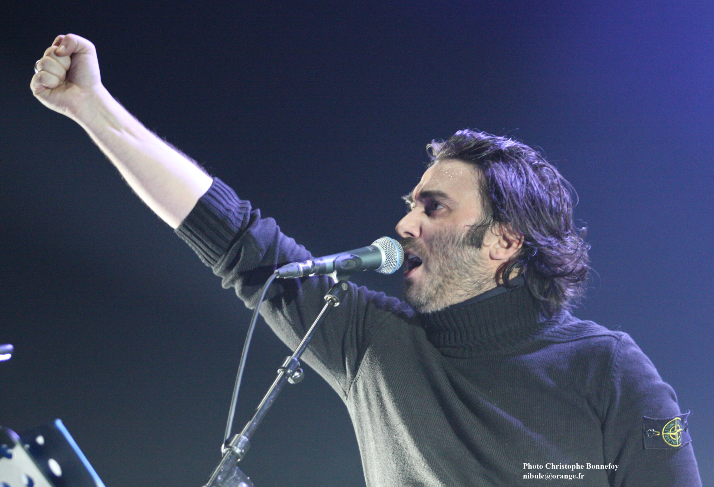
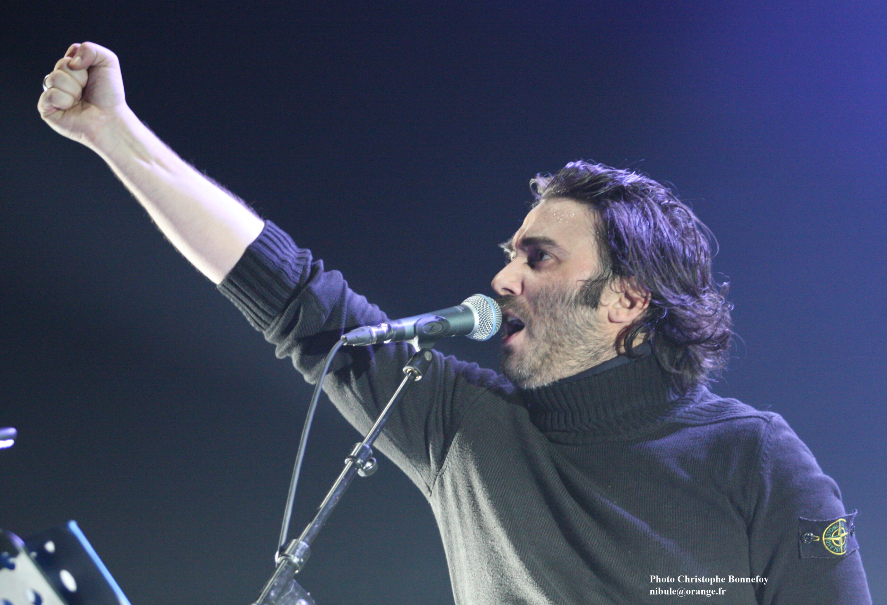
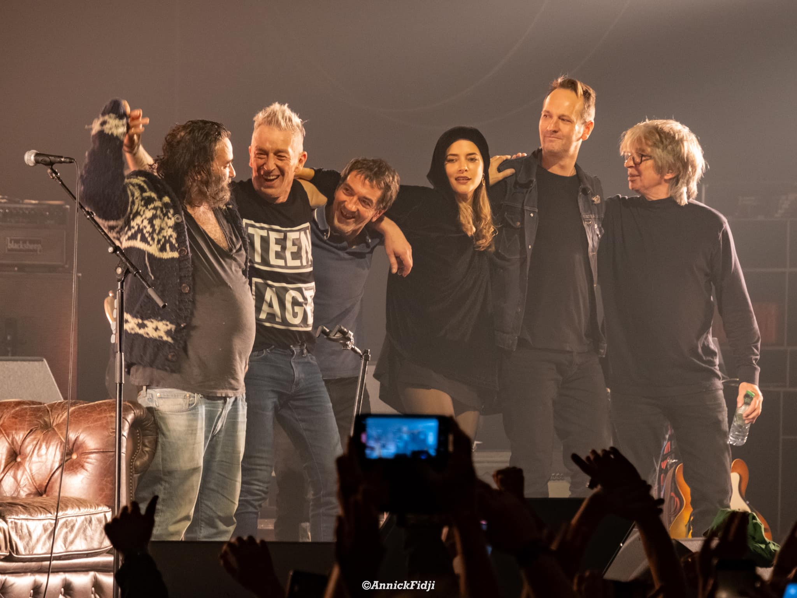
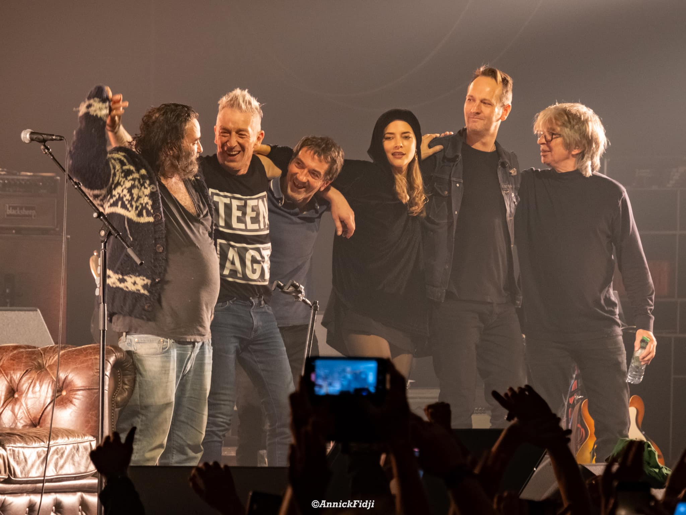

Biographie :
Influencé notamment par le groupe Noir Désir, Damien Saez se réclame surtout de Jacques Brel,
de Barbara, de Léo Ferré et de Georges Brassens. Il admire Charles Baudelaire, mais également Victor Hugo
qu'il cite régulièrement dans ses textes et sur scène. Aussi, il fait référence dans ses chansons à plusieurs films,
tels que Les Enfants du paradis de Marcel Carné.
Prenant souvent position contre la société de consommation et la marchandisation des relations dans ses chansons,
Damien Saez exprime notamment sa révolte dans une lettre postée sur son site à la suite de la censure de l'affiche
de son album J'accuse (2010).Lors d'un entretien accordé à la radio France Inter, le 15 octobre 2012,
dernière entrevue dans un média public, il exprime cependant ne pas se considérer comme un artiste engagé.
Pour lui, « Il faudrait recréer un vocabulaire. Je ne peux pas dire extrême gauche parce que quand j'entends
quelqu'un parler de « travailleur », je ne peux pas m'associer rien qu'à cause du mot. Pour moi, le meilleur
système serait celui de partage, peut-être moins extrémiste qu'il a pu être dans le bloc de l'Est. Je me sens à
gauche,
extrêmement – j'aurais tendance à dire « communiste » dans les textes – en sachant qu'il faudrait changer le mot.
Il faut la même idée mais avec le vocabulaire d'aujourd'hui. »
Actualité :
Le 6 juillet 2023, Saez annonce la diffusion de l'œuvre Apocalypse, un triple album de 3 heures,
en écoute payante sur son site officiel. La sortie de cet album est conditionnée à la somme préalablement
récoltée grâce aux ventes pour faire paraitre son œuvre. L'artiste déclare que si cette somme n'est pas
atteinte le 7 juillet 2024, l'album ne verra jamais le jour. Dans le cas contraire, il sera publié en
téléchargement gratuit et en écoute sur les plateformes musicales.
En juillet 2023, le label Cinq annonce la sortie de l'intégralité de la discographie de l'artiste sur les
plateformes de streaming. Jusqu'à présent, seuls quelques albums et extraits étaient disponibles.
En novembre de la même année, il lance une nouvelle tournée, sans promouvoir d'album en particulier.
Elle connaît son point d'orgue le 9 décembre à l'Accor Arena57. La première partie est assurée par SÜEÜR,
le groupe dont son demi-frère Théo Cholbi est le vocaliste.
De la même manière, il annonce la tournée 2025 pour le printemps, le 26 mars 202458. Intitulée Apocalypse Tour 2025,
elle se compose de 21 dates en France et en Suisse dont une nouvelle date à l'Accor Arena de Paris59 où l'artiste
s'y produire pour la 3e fois de sa carrière, après 2019 et 2023.
A l'occasion des 25 ans de la sortie du premier album de Saez, Jours étranges, le 25 octobre 1999,
sera publié le livre Poésie, Anthologie 1999-2024, le 25 octobre 2024. Il s'agit d'un recueil de l'intégralité
des textes de Saez écrits entre 1999 et 202460.

 

 
